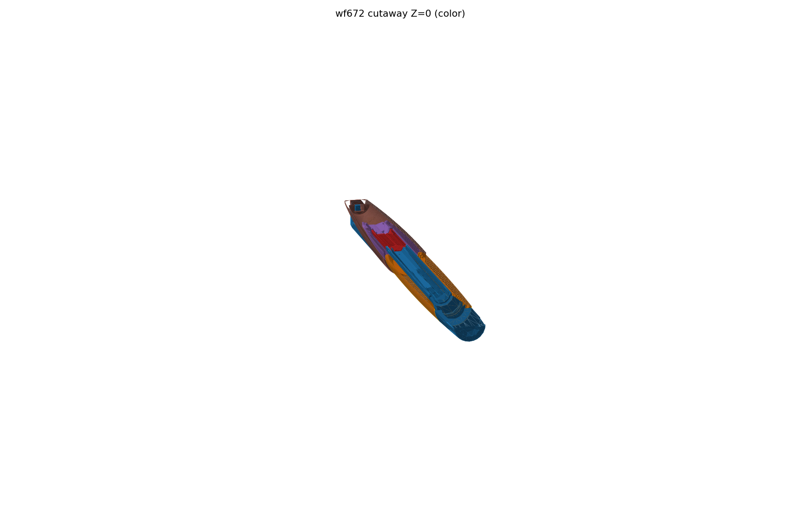

An open-source 3D-printed fountain pen. One STL, CC BY 4.0.

cutaway2026.10
The idea
wf672 is an original 3D-printed fountain pen. Download the STL from Releases and build your own — everything after that is yours to explore. Please don't ask the author for files that were never open-sourced (manuals included): the STL is the whole project.
Bailing (白翎) was Dandong Pen Factory's 1968 auto-suction line, whose grooved capillary core — collectors call it the "corn cob" — drinks ink on contact; wf672 rebuilds exactly that structure in a body you can print.